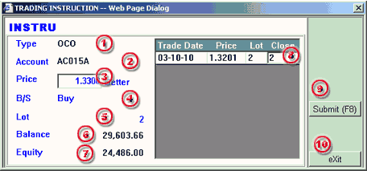

Placing an OCO Order
When the user is placing a Limit/Stop for liquidation purpose, he may at the same time place an One Cancel Other order (OCO). OCO is a pair of limit orders (one for better and one for stop) that would cancel the other order of the other if it get confirmed for execution. The pair of orders are of the same quantity for the liquidation of the same position.
When the user has completed the information required the first order of the pair, user would be able to activate the second order of the pair by mouse click the OCO button of the Trading Instruction dialogue. When the OCO appeared, user are required to fill up informaton as follows:
| 1 | Type - OCO order |
 OCO
Order processing dialogue |
| 2 | Account - not allowed for selection. It is the same as the 1st order of the pair. | |
| 3 | Price - enter the price to trigger the trade | |
| 4 | B/S - not allowed for selection. It is the same as the 1st order of the pair. | |
| 5 | Lot - not allowed for selection. It is the same as the 1st order of the pair. | |
| 6 | Balance - margin balance of the selected account | |
| 7 | Equity - margin equity of the selected account | |
| 8 | Close - not allowed for modification. It is the same quantity as the 1st order of the pair. | |
| 9 | Submit(F8) - button to submit the order to the dealing desk | |
| 10 | Exit - button to exit the Trading Instruction dialogue |
Verify
the order before final submission
The
two orders of the OCO will bear the same reference code and will be listed with
a status of Unconfirm in the
Working Order panel when the pair of orders have been successfully placed
and accepted by the Trading Desk. The Unconfirm
status will stay as long as the order is not "Confirmed"
for execution or "Cancelled" on whatever
reasons.If the instruction fulfills all execution requirements as set by the
company, the dealer will then confirm the order and return the confirmed sign
and Executed Order Code to the user. The
order status will then be changed to "Confirmed".
Remarks:
Subject to the Trading rules of the company, user may be possible to cancel any orders of the pairs when it is in Unconfirm status. When an order is successfully cancelled, the other order of the pair will be cancelled simaltaneously. See how to cancell an unconfirmed order.